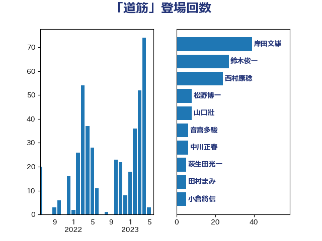

単語「道筋」

| 岸田文雄 | 自由民主党 | 39 回 |
| 鈴木俊一 | 自由民主党 | 27 回 |
| 西村康稔 | 自由民主党 | 24 回 |
| 松野博一 | 自由民主党 | 8 回 |
| 山口壯 | 自由民主党 | 8 回 |
| 音喜多駿 | 日本維新の会 | 6 回 |
| 中川正春 | 立憲民主党 | 6 回 |
| 萩生田光一 | 自由民主党 | 5 回 |
| 田村まみ | 国民民主党 | 5 回 |
| 小倉將信 | 自由民主党 | 5 回 |
| 守島正 | 日本維新の会 | 5 回 |
| 馬場雄基 | 立憲民主党 | 4 回 |
| 谷合正明 | 公明党 | 4 回 |
| 西村明宏 | 自由民主党 | 4 回 |
| 浅田均 | 日本維新の会 | 4 回 |
| 櫻井周 | 立憲民主党 | 4 回 |
| 柴田巧 | 日本維新の会 | 4 回 |
| 岬麻紀 | 日本維新の会 | 4 回 |
| 加藤勝信 | 自由民主党 | 4 回 |
| 馬場伸幸 | 日本維新の会 | 3 回 |
| 藤木眞也 | 自由民主党 | 3 回 |
| 浜野喜史 | 国民民主党 | 3 回 |
| 柴山昌彦 | 自由民主党 | 3 回 |
| 山崎誠 | 立憲民主党 | 3 回 |
| 宮本徹 | 日本共産党 | 3 回 |
| 高木啓 | 自由民主党 | 2 回 |
| 青山大人 | 立憲民主党 | 2 回 |
| 阿部弘樹 | 日本維新の会 | 2 回 |
| 舟山康江 | 国民民主党 | 2 回 |
| 美延映夫 | 日本維新の会 | 2 回 |
| 緒方林太郎 | 無所属 | 2 回 |
| 緑川貴士 | 立憲民主党 | 2 回 |
| 紙智子 | 日本共産党 | 2 回 |
| 篠原豪 | 立憲民主党 | 2 回 |
| 笠井亮 | 日本共産党 | 2 回 |
| 神谷裕 | 立憲民主党 | 2 回 |
| 石垣のりこ | 立憲民主党 | 2 回 |
| 石井苗子 | 日本維新の会 | 2 回 |
| 石井啓一 | 公明党 | 2 回 |
| 片山さつき | 自由民主党 | 2 回 |
| 渡辺創 | 立憲民主党 | 2 回 |
| 沢田良 | 日本維新の会 | 2 回 |
| 永岡桂子 | 自由民主党 | 2 回 |
| 柚木道義 | 立憲民主党 | 2 回 |
| 斎藤アレックス | 国民民主党 | 2 回 |
| 後藤茂之 | 自由民主党 | 2 回 |
| 庄子賢一 | 公明党 | 2 回 |
| 山口那津男 | 公明党 | 2 回 |
| 小池晃 | 日本共産党 | 2 回 |
| 小宮山泰子 | 立憲民主党 | 2 回 |
| 寺田学 | 立憲民主党 | 2 回 |
| 宮口治子 | 立憲民主党 | 2 回 |
| 大野泰正 | 自由民主党 | 2 回 |
| 塩川鉄也 | 日本共産党 | 2 回 |
| 城井崇 | 立憲民主党 | 2 回 |
| 吉田はるみ | 立憲民主党 | 2 回 |
| 中司宏 | 日本維新の会 | 2 回 |
| 三宅伸吾 | 自由民主党 | 2 回 |
| 三上えり | 立憲民主党 | 2 回 |
| 鰐淵洋子 | 公明党 | 1 回 |
| 高良鉄美 | 無所属 | 1 回 |
| 高橋光男 | 公明党 | 1 回 |
| 高橋はるみ | 自由民主党 | 1 回 |
| 高村正大 | 自由民主党 | 1 回 |
| 高木真理 | 立憲民主党 | 1 回 |
| 高市早苗 | 自由民主党 | 1 回 |
| 長妻昭 | 立憲民主党 | 1 回 |
| 鎌田さゆり | 立憲民主党 | 1 回 |
| 鈴木英敬 | 自由民主党 | 1 回 |
| 鈴木義弘 | 国民民主党 | 1 回 |
| 鈴木敦 | 国民民主党 | 1 回 |
| 金子恭之 | 自由民主党 | 1 回 |
| 野田聖子 | 自由民主党 | 1 回 |
| 野田佳彦 | 立憲民主党 | 1 回 |
| 野村哲郎 | 自由民主党 | 1 回 |
| 重徳和彦 | 立憲民主党 | 1 回 |
| 里見隆治 | 公明党 | 1 回 |
| 道下大樹 | 立憲民主党 | 1 回 |
| 進藤金日子 | 自由民主党 | 1 回 |
| 辻清人 | 自由民主党 | 1 回 |
| 足立康史 | 日本維新の会 | 1 回 |
| 赤嶺政賢 | 日本共産党 | 1 回 |
| 角田秀穂 | 公明党 | 1 回 |
| 西村智奈美 | 立憲民主党 | 1 回 |
| 西岡秀子 | 国民民主党 | 1 回 |
| 藤田文武 | 日本維新の会 | 1 回 |
| 藤巻健太 | 日本維新の会 | 1 回 |
| 葉梨康弘 | 自由民主党 | 1 回 |
| 菅家一郎 | 自由民主党 | 1 回 |
| 茂木敏充 | 自由民主党 | 1 回 |
| 若宮健嗣 | 自由民主党 | 1 回 |
| 舩後靖彦 | れいわ新選組 | 1 回 |
| 米山隆一 | 立憲民主党 | 1 回 |
| 竹谷とし子 | 公明党 | 1 回 |
| 竹詰仁 | 国民民主党 | 1 回 |
| 稲津久 | 公明党 | 1 回 |
| 稲富修二 | 立憲民主党 | 1 回 |
| 秋野公造 | 公明党 | 1 回 |
| 秋葉賢也 | 自由民主党 | 1 回 |
| 福島伸享 | 無所属 | 1 回 |
| 福山哲郎 | 立憲民主党 | 1 回 |
| 神田潤一 | 自由民主党 | 1 回 |
| 田村貴昭 | 日本共産党 | 1 回 |
| 田名部匡代 | 立憲民主党 | 1 回 |
| 猪瀬直樹 | 日本維新の会 | 1 回 |
| 牧野たかお | 自由民主党 | 1 回 |
| 牧山ひろえ | 立憲民主党 | 1 回 |
| 牧原秀樹 | 自由民主党 | 1 回 |
| 片山大介 | 日本維新の会 | 1 回 |
| 漆間譲司 | 日本維新の会 | 1 回 |
| 源馬謙太郎 | 立憲民主党 | 1 回 |
| 浜田聡 | NHK党 | 1 回 |
| 河西宏一 | 公明党 | 1 回 |
| 水岡俊一 | 立憲民主党 | 1 回 |
| 櫛渕万里 | れいわ新選組 | 1 回 |
| 梅村聡 | 日本維新の会 | 1 回 |
| 梅村みずほ | 日本維新の会 | 1 回 |
| 柴愼一 | 立憲民主党 | 1 回 |
| 柳本顕 | 自由民主党 | 1 回 |
| 柳ヶ瀬裕文 | 日本維新の会 | 1 回 |
| 林芳正 | 自由民主党 | 1 回 |
| 松本剛明 | 自由民主党 | 1 回 |
| 松川るい | 自由民主党 | 1 回 |
| 杉久武 | 公明党 | 1 回 |
| 末松信介 | 自由民主党 | 1 回 |
| 朝日健太郎 | 自由民主党 | 1 回 |
| 早稲田ゆき | 立憲民主党 | 1 回 |
| 新垣邦男 | 立憲民主党 | 1 回 |
| 斉藤鉄夫 | 公明党 | 1 回 |
| 掘井健智 | 日本維新の会 | 1 回 |
| 打越さく良 | 立憲民主党 | 1 回 |
| 徳永エリ | 立憲民主党 | 1 回 |
| 平木大作 | 公明党 | 1 回 |
| 平山佐知子 | 無所属 | 1 回 |
| 岩田和親 | 自由民主党 | 1 回 |
| 岡田克也 | 立憲民主党 | 1 回 |
| 山際大志郎 | 自由民主党 | 1 回 |
| 山本太郎 | れいわ新選組 | 1 回 |
| 山本啓介 | 自由民主党 | 1 回 |
| 尾身朝子 | 自由民主党 | 1 回 |
| 小野泰輔 | 日本維新の会 | 1 回 |
| 小沼巧 | 立憲民主党 | 1 回 |
| 小沢雅仁 | 立憲民主党 | 1 回 |
| 小林鷹之 | 自由民主党 | 1 回 |
| 小山展弘 | 立憲民主党 | 1 回 |
| 宮崎政久 | 自由民主党 | 1 回 |
| 宮崎勝 | 公明党 | 1 回 |
| 大西健介 | 立憲民主党 | 1 回 |
| 大岡敏孝 | 自由民主党 | 1 回 |
| 大塚耕平 | 国民民主党 | 1 回 |
| 堤かなめ | 立憲民主党 | 1 回 |
| 国光あやの | 自由民主党 | 1 回 |
| 吉良州司 | 無所属 | 1 回 |
| 古賀之士 | 立憲民主党 | 1 回 |
| 古川禎久 | 自由民主党 | 1 回 |
| 古川康 | 自由民主党 | 1 回 |
| 古屋範子 | 公明党 | 1 回 |
| 北神圭朗 | 無所属 | 1 回 |
| 勝部賢志 | 立憲民主党 | 1 回 |
| 前原誠司 | 国民民主党 | 1 回 |
| 倉林明子 | 日本共産党 | 1 回 |
| 佐藤英道 | 公明党 | 1 回 |
| 住吉寛紀 | 日本維新の会 | 1 回 |
| 伊藤孝恵 | 国民民主党 | 1 回 |
| 伊藤俊輔 | 立憲民主党 | 1 回 |
| 亀岡偉民 | 自由民主党 | 1 回 |
| 中田宏 | 自由民主党 | 1 回 |
| 中島克仁 | 立憲民主党 | 1 回 |
| 三浦靖 | 自由民主党 | 1 回 |